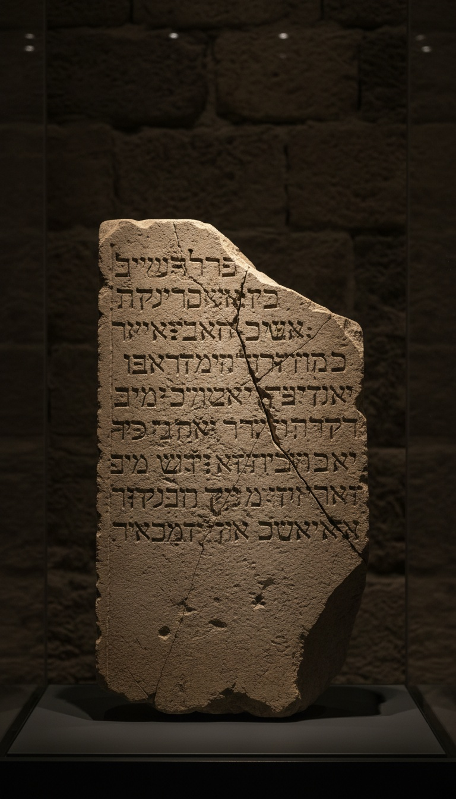

The Bible credits King Hezekiah with a tunnel, and a stone carved inside that tunnel records the exact moment two blind crews smashed through the rock to meet each other.
Most ancient boasts are carved by kings, for kings, on palace walls. This one was carved by the diggers themselves, in the dark, about six meters from the tunnel's southern exit. It never mentions Hezekiah. It does not need to. Second Kings already did, and the wall agrees with the book down to the measurements.

The Verse That Called It First
Second Kings 20:20 closes Hezekiah's reign with a strange detail for a royal obituary. It says he "made a pool, and a conduit, and brought water into the city." Second Chronicles 32:30 sharpens it: Hezekiah "stopped the upper watercourse of Gihon, and brought it straight down to the west side of the city of David." Isaiah 22:11 describes a reservoir built "between the two walls" for the water of the old pool. Three separate books, three separate authors, one engineering project.
The Book of Sirach, written around 180 BC, repeats it again in chapter 48: Hezekiah "dug the sheer rock with iron and built pools for water." The memory of this tunnel survived six centuries of Jewish writing before anyone set foot in it with a lamp and a notebook.
The Army That Forced the Dig
Jerusalem had one reliable water source, the Gihon Spring, and it bubbled up in the Kidron Valley outside the city's eastern wall. In a siege, that spring belonged to whoever held the valley. In 701 BC, the man coming to hold it was Sennacherib of Assyria.
Sennacherib left his own receipts. The Taylor Prism in the British Museum in London, its twin at the Oriental Institute in Chicago, and a third prism at the Israel Museum in Jerusalem all carry the same Assyrian boast: he shut Hezekiah up in Jerusalem "like a bird in a cage." He lists forty-six walled Judean cities he destroyed. Jerusalem is the one city on the route he never claims to have taken.
A caged bird with its own private water supply survives the siege. Hezekiah's engineers made sure the spring ran inside the walls, hidden under the hill, and the Assyrian king went home with a prism full of excuses.
Two Crews, Solid Rock, Zero Line of Sight
The tunnel runs about 533 meters from the Gihon Spring to the Pool of Siloam. It does not run straight. It snakes in a long S-curve through the limestone of the City of David, and the total drop from end to end is roughly thirty centimeters. That is a gradient of about 0.06 percent, cut by hand, by men holding oil lamps.
Two teams started at opposite ends and dug toward each other. They had no compass, no surveying laser, and no way to see the other crew. Walk the tunnel today and you can find the meeting point yourself. The chisel marks on either side point in opposite directions, and right where they collide the passage jogs sideways, a scar left by two crews correcting course by ear.
By ear is the key phrase. The stone tells us exactly how they did it.
"There was heard the voice of a man calling to his fellow. And on the day of the tunnelling through, the quarrymen struck each man toward his fellow, axe against axe, and the water flowed."
The Stone the Diggers Left Behind
In 1880, a teenage student of the German architect Conrad Schick was wading through the southern end of the tunnel and spotted letters cut into the wall. Schick reported it. Scholars including Archibald Sayce crawled in to copy it, half submerged, by candlelight, scrubbing away centuries of lime deposit with acid.
What they read was six lines of Hebrew in the old Paleo-Hebrew script, the alphabet used in Judah before the Babylonian exile. It describes the final stretch of digging. The crews heard a man's voice calling through a fissure in the rock. They struck toward the sound, axe against axe, and broke through. "Then the water flowed from the spring to the pool for 1,200 cubits, and 100 cubits was the height of the rock above the heads of the quarrymen."
Run the math. A royal cubit of about 44 centimeters times 1,200 gives roughly 528 meters. The tunnel measures 533. The diggers recorded their own work to within one percent, and they did it twenty-seven centuries before anyone put a tape measure in there.
The Date That Killed the Late Theory
In 1996, the scholars John Rogerson and Philip Davies argued in Biblical Archaeologist that the inscription belonged to the Hasmonean era, around the second century BC, centuries after Hezekiah. Their case rested on the shape of the letters and on a general distrust of the Kings narrative.
The rock answered them. In 2003, Amos Frumkin and Aryeh Shimron of the Hebrew University, with Jeff Rosenbaum, published their results in the journal Nature. They radiocarbon-dated plant fragments sealed inside the tunnel's original plaster and ran uranium-thorium dating on stalactites growing from the ceiling. Both clocks landed around 700 BC. That is Hezekiah's reign, the same decade Sennacherib's army marched on the city.
Paleographers had already placed the script in the late eighth century. The plaster put it there. The stalactites put it there. Three independent clocks, one date, one king. The Hasmonean theory ends in the same tunnel it tried to rewrite.
Cut Out of the Wall and Shipped to Istanbul
In 1890, someone hacked the inscription out of the tunnel wall to sell it. The stone cracked into pieces in the process. Ottoman authorities, who ruled Jerusalem at the time, tracked the fragments down and shipped them to Constantinople.
That is where the diggers' testimony sits today: the Istanbul Archaeology Museums, inventory number 2195, a broken slab of Jerusalem limestone behind glass more than a thousand kilometers from the wall it was carved into. Israel has asked for it back more than once. It has stayed in Istanbul.
The tunnel itself is still in Jerusalem, and it still works. Visitors wade through it in the City of David with the Gihon's water running around their knees, following the exact path the two crews cut toward each other's voices in 701 BC.
So stack it up. Second Kings names the king. Chronicles names the spring. Sennacherib's own prism names the siege. The Nature paper names the decade. And the diggers' stone names the moment, the voice through the rock, the axe meeting axe, the 1,200 cubits that land within five meters of the real tunnel.
The people who wrote Second Kings were recording something the people underground could confirm with their own hands. If one throwaway verse about a water pipe holds up to plaster, stalactites, and an Assyrian prism, the real question is what else in that book was written by eyewitnesses who were telling the truth. Which passage do you think gets proven next? Drop it in the comments.
Before you go
7 books the Vatican doesn't want you reading. Free PDF — the texts they cut, with sources. Joined by 140+ Inner Circle members.
No spam. Unsubscribe anytime.
Go deeper
The Hidden Canon, Vol. I — Enoch. Jubilees. Thomas. Mary. Judas. 90 pages, 14 chapters, every receipt cited. The books your Bible quietly removed.
Read the Canon →Books that informed this investigation
As an Amazon Associate, Hidden Epoch earns from qualifying purchases. Cost to you: nothing.
Research safely
The VPN we use to research without being tracked. First 3 months free.
Get NordVPN →